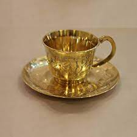

<p>What is the difference between a coffee cup and a teacup?
Teacups are wider at the top and shallower so the tea can cool down faster, to a consumable temperature because tea is set with BOILING water. The handles of teacups are smaller to hook on a single finger WHILE the handles of coffee cups are bigger for two or three fingers.</p>